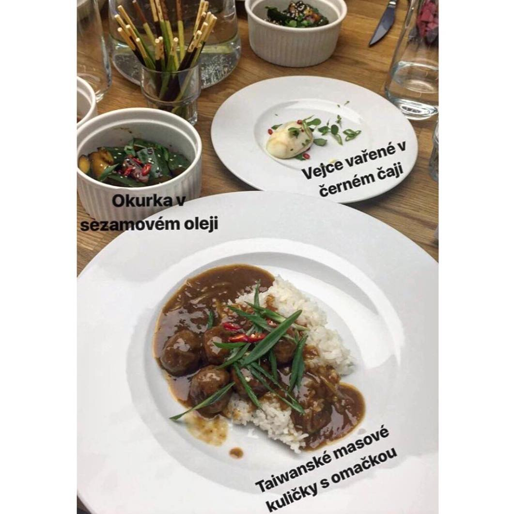

Mäsová omáčka podľa @kulinerplusbrno — Normy Jedál
🇨🇿Malá ukázka asijského menu z květnového kurzu s Markem Partlem a Milanem Jandou!😊 🇬🇧Just a small sample of Asian Course which was in May. All dishes are incredibly delicious and Wish you to try it!😍 #asijskakuchyne #asie #chutsveta #ochutnejasii #vejcevcernemcaji #okurkavsezamovemoleji #taiwanskemasovekulicky #masovaomacka #taiwanskypokrm #taiwanesefood #asia #asianstyle #asiankitchen #internationalfood #cucumberinoil #sezamoil #rice #eggs #meatballsinsauce #taiwan #asianguys #guysinkitchen